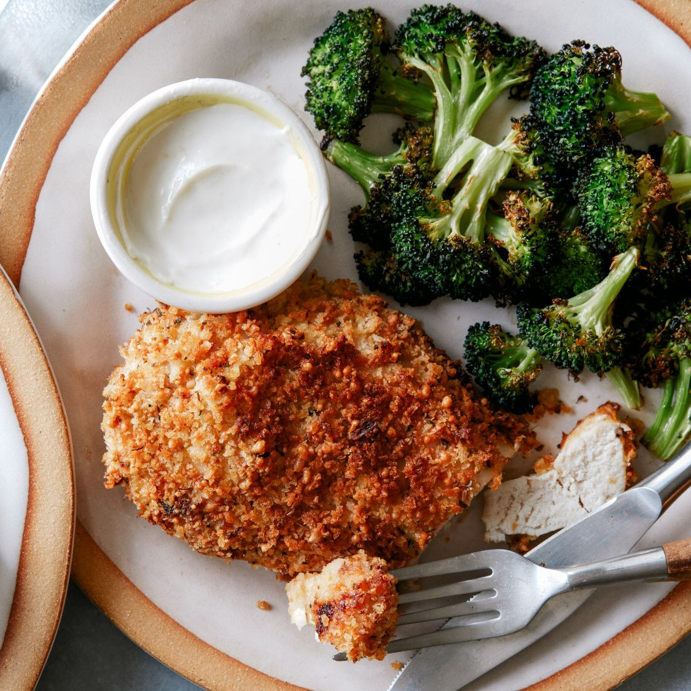

Healthy Air Fryer Parmesan Chiken with Broccoli

This chicken gets incredibly crunchy, thanks to a light coating of panko and Parmesan and a quick cook in the air fryer! Serve it with charred broccoli and a tangy yogurt sauce for a healthy and complete meal you can throw together any day of the week.
Ingredients
- 1/3 cup Panko
- 1/4 cup finely grated Parmesan
- 4 teaspoons olive oil
- 1/2 teaspoon dried oregano
- Kosher salt and freshly ground black pepper
- 2 small boneless, skinless chicken breasts
(about 6 ounces each)
- 1 1/2 tablespoons plus 1/4 teaspoon Dijon mustard
- 2 cups small broccoli florets(about 5 ounces)
- 1/4 cup low-fat plain yogurt
- Finely grated zest and juice of 1/2 lemon
Method
- Stir together the panko, Parmesan, 2 teaspoons of the olive oil, the oregano, pinch of salt and a couple grinds of pepper in a shallow bowl or small baking dish until thoroughly combined. Pat the chicken dry between a couple paper towels, then sprinkle lightly with salt and pepper. Brush both sides of the chicken with 1 1/2 tablespoons of the Dijon, then press into the panko-Parmesan mixture, making sure both sides are evenly coated.
- Toss the broccoli, remaining 2 teaspoons of the olive oil, a good pinch of salt and several grinds of pepper in a medium bowl until evenly coated.
- Preheat a 3.5-quart air fryer to 375 degrees F. Add the chicken to the air-fryer basket and cook until it’s starting to brown and crisp on the top, about 6 minutes. Flip the chicken over with tongs and position in the center of the basket, then scatter the broccoli around the perimeter. Continue air-frying until the chicken is crisp all over and an instant-read thermometer inserted in the middle registers 160 degrees F, and the broccoli is tender and charred, about 8 minutes more.
- Meanwhile, stir together the yogurt, lemon zest and juice, remaining 1/4 teaspoon Dijon, a pinch of salt and several grinds of pepper in a small bowl. Serve alongside the chicken and broccoli for dipping.